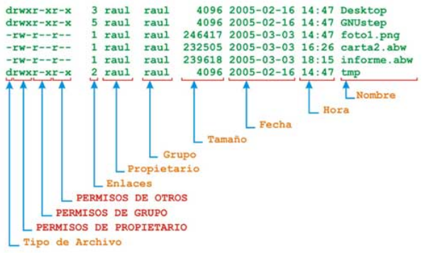

11. Gestión de archivos en Linux
11.1. Conceptos Generales
Un sistema de archivos es una estructura lógica que organiza los datos en un dispositivo de almacenamiento, como un disco duro o una memoria USB.
En Linux, se utilizan diferentes tipos de sistemas de archivos, cada uno con sus propias características y ventajas.
- Fichero: Es una unidad de almacenamiento que contiene información. En Linux, todo es un archivo, desde programas hasta documentos y configuraciones.
- Directorio: Es una estructura que agrupa archivos y otros directorios de forma jerárquica.
- Ruta: Es la secuencia de directorios que se utiliza para llegar a un archivo específico.
11.2. Organización de Ficheros en Linux
Los ficheros en Linux se organizan en un sistema de archivos jerárquico. El directorio raíz (/) es el punto de partida de la estructura jerárquica. Desde allí, se pueden encontrar subdirectorios y archivos.
Ejemplo:
/
├── bin
│ ├── ls
│ └── pwd
├── etc
│ ├── passwd
│ └── shadow
└── home
└── usuario
├── Descargas
└── Documentos
11.3. Sistemas de Ficheros Soportados
Linux soporta una amplia variedad de sistemas de archivos, entre los que se encuentran:
- EXT4: El sistema de archivos por defecto en la mayoría de las distribuciones de Linux. Es robusto, eficiente y compatible con una gran variedad de dispositivos.
- FAT32: Un sistema de archivos compatible con Windows y otros sistemas operativos. Es una buena opción para dispositivos de almacenamiento compartidos.
- NTFS: El sistema de archivos por defecto en Windows. No es tan eficiente como EXT4, pero ofrece algunas ventajas como la seguridad y el uso de nombres de archivo largos.
- ZFS: Un sistema de archivos moderno con características avanzadas como la compresión, la deduplicación de datos y la protección contra la corrupción de datos.
11.4. Ficheros
11.4.1. Nombres
Los nombres de los archivos en Linux pueden tener hasta 255 caracteres y pueden contener letras, números, guiones bajos (_) y guiones (-). No se pueden usar espacios ni caracteres especiales como *, ?, #, etc.
Ejemplos de nombres de archivos válidos:
- archivo.txt
- mi_archivo.png
- programa-1.2.3
Ejemplos de nombres de archivos no válidos:
- archivo con espacio.txt
- ?archivo.txt
11.4.2. Características de los Ficheros
Cada archivo en Linux tiene una serie de características, como:
- Nombre: El nombre del archivo.
- Tipo: El tipo de archivo, como regular, directorio, enlace simbólico, etc.
- Tamaño: El tamaño del archivo en bytes.
- Permisos: Los permisos que controlan quién puede acceder al archivo y cómo.
- Propietario: El usuario que es el propietario del archivo.
- Grupo: El grupo al que pertenece el archivo.
- Fecha de creación: La fecha y hora en que se creó el archivo.
- Fecha de modificación: La fecha y hora en que se modificó el archivo por última vez.
11.4.3. Tipos de Ficheros
En Linux, existen diferentes tipos de archivos:
- Archivos regulares: Contienen datos de cualquier tipo, como texto, imágenes, vídeos, etc.
- Directorios: Agrupan archivos y otros directorios.
- Enlaces simbólicos: Son punteros a otros archivos.
- Archivos especiales: Permiten acceder a dispositivos de hardware como discos duros, impresoras, etc.
- Tuberías: Permiten la comunicación entre procesos.
11.5. Directorios
En Linux, existen algunos directorios que son especialmente importantes:
- /: El directorio raíz.
- /bin: Contiene los comandos básicos
- /etc: Contiene los archivos de configuración del sistema.
- /home: Contiene los archivos personales de los usuarios.
- /lib: Contiene las bibliotecas compartidas del sistema.
- /tmp: Se utiliza para almacenar archivos temporales.
- /usr: Contiene la mayoría de los programas y archivos del sistema.
- /root: Esl es directorio del superusuario (root)
11.6. Comandos de Gestión de Archivos
La sintaxis de lños comanandos en Linux es similar a la de los comandos de PowerShell de Windows y es la siguiente:
orden [opciones] [argumentos]
El shell de Linux tiene un sistema de ayuda basado en manuales para la mayoría de las órdenes del sistema. Para acceder a la ayuda se usa la orden man.Por ejemplo, si queremos ver el manual de la orden ls (que explicaremos más adelante), tendremos que ejecutar:
$ man ls
Existen muchos comandos para gestionar archivos en Linux. Veamos algunos de los más utilizados
ls:
Lista el contenido de un directorio (list).
Opciones:
- ls -a --> Muestra todos los archivos y directorios, incluso los ocultos (los que comienzan con un punto).
- ls -l --> Muestra un listado en el formato largo, con información de permisos
- ls -lh --> Muestra la misma información que con la opción l pero el tamaño del fichero se muestra en unidades más entendibles (K, M, G...).
- ls -S --> Muestra el contenido ordenado por tamaño de archivo.
- ls -t --> Muestra el contenido ordenado por la fecha de última modificación.
- ls –m --> Mepara horizontalmente en una sola columna separados por una coma.
- ls –r --> Muestra contenido en orden inverso.
- ls –R --> Para mostrar el contenido recursivo, muestra los subdirectorios.
pwd:
Su nombre viene del inglés "print working directory" y su único cometido es el de mostrar por pantalla una línea que nos dice la ruta absoluta al directorio actual.
cd:
El nombre de cd le viene de "cambiar de directorio" (en inglés, "change directory") y sirve exactamente para lo que parece: cambia el directorio actual al que nosotros le especifiquemos en su argumento.
mkdir:
Esta orden sirve para crear una carpeta o directorio cuyo nombre será el que le pasemos como argumento a dicha orden.
rmdir:
Sirve para eliminar un directorio cuyo nombre será el que le pasemos como argumento.
Para borrar la carpeta cosas que está en nuestro directorio de trabajo actual
$ rmdir cosas
cp:
Proviene del inglés Copy, y copia el archivo que se le pasa por parámetro (origen) en otro cuyo nombre se le pasa como segundo parámetro (destino).
Para copiar el contenido del fichero fichero1.txt en copiafichero1.txt, encontrándose ambos en el directorio de trabajo actual.
$ cp fichero1.txt copiafichero1.txt
Para copiar todo el contenido de la carpeta directorio1 en el destino indicado, que en este caso es /tmp
$ cp -R /home/alumno/directorio1 /tmp
mv:
Esta orden tiene el efecto de mover archivos de un directorio a otro, según se le indique. Proviene del inglés Move
Para mover el archivo mueveme.txt que se encuentra en el directorio actual, al directorio /home
$ mv mueveme.txt /home
La orden mv tiene otra utilidad, que es la de cambiar el nombre a un archivo. Para ello, no tenemos más que pasarle como argumentos el nombre del fichero que queremos renombrar y el nombre nuevo, de la siguiente manera:
$ mv antiguonombre.txt nuevonombre.tx
.
rm: Sirve para eliminar un archivo cuyo nombre será el que le pasemos como argumento.
Para borrar el archivo con nombre borrame.txt
$ rm borrame.txt
Para borrar 3 directorios del directorio de trabajo actual.
$ rmdir pepito juanito paquito
Si el directorio contiene ficheros y queremos borrar tanto el directorio como su contenido tendremos que usar la orden rm con la opción -R.
Mucho cuidado al utilizar esta opción, ya que podríamos borrar información importante.
touch:
La orden touch sirve para cambiar la fecha de acceso y modificación de un fichero que le pasemos como argumento. Si no existe, lo creará vacío con el nombre que le hayamos pasado como argumento. Con la orden touch podemos crear varios archivos con una sola orden:
$ touch fich1 fich2 fich3 fich4
Si queremos crear varios ficheros en la misma ruta se pueden utilizar {} de esta manera:
$ to+uch /home/alumno/Actividad/{fich1.txt,fich2.jpg,fich3.jpg}
Esto creará fich1.txt, fich2.jpg, fich3.jpg en /home/alumno/Actividad
echo:
Muestra en la consola el texto escrito entre comillas.
echo “hola pepito”
cat:
Muestra en el shell el contenido completo del fichero de texto que se le pasa como argumento. Si le pasamos varios argumentos, mostrará los ficheros de texto en el orden en que se lo indiquemos como si fuesen uno sólo, sin distinguir qué línea corresponde a qué fichero. Sus principales opciones son las siguientes
Para numerar todas las líneas del texto, incluso las vacías. En concreto, pone un número delante de cada línea al mostrarlas por pantalla.
cat -n fichero.txt
Para numerar todas líneas del texto que no sean vacías. Las líneas vacías las muestra pero no les pone ningún número delante.
cat -b fichero.txt
more:
Permite avanzar por el documento línea a línea pulsando la tecla Intro o página a página mediante la barra espaciadora. Si le pasamos varios nombres de fichero como argumentos, la orden more nos los mostrará uno detrás de otro en el orden indicado, pero distinguiendo cada archivo de manera separada. Sus opciones más útiles son:
Para especificar el número de líneas que queremos que muestre por cada página. Por ejemplo, si queremos visualizar 6 líneas por página ejecutaríamos
more 6 listado.txt
Para comienzar la visualización delfichero en la línea X. Por ejemplo, si queremos ver un fichero a partir de su línea 13 pondríamos
more +13 listado.txt
tail y head: En ocasiones no queremos ver un fichero de texto completo sino sólo el principio o el final. Para ello, el shell de Linux dispone de 2 órdenes, head ytail, que muestran respectivamente las primeras o las últimas 10 líneas del fichero que le pasemos como argumento. Si en vez de mostrar 10 líneas queremos mostrar más o menos, ambas órdenes comparten las siguientes opciones:
Para mostrar las primeras o las últimas X líneas del fichero.
head -n X fichero
tail -n X fichero
Para mostrar los primeros o los últimos X bytes (normalmente un caracter equivale a un byte) del fichero.
head -c X fichero
tail -c X fichero
ln: Esta orden, se utiliza para crear un enlace duro al fichero que se le pasa como argumento.
$ ln mifichero mifichero1, se creará un enlace duro al fichero "mifichero", que tendrá como nombre "mifichero1".
Para crear un enlace simbólico disponemos de la opción -s de esta misma orden, que se ejecutará de la misma manera que la anterior.
$ ln -s mifichero mifichero2, creará un enlace simbólico al fichero "mifichero", que tendrá como nombre "mifichero2"
unlink: Borra un enlace existente. En el caso en que dicho enlace sea el último que hace referencia al inodo, el fichero se borrará dejando el espacio disponible. En caso de que exista algún otro, sólo se borra el enlace.
$ unlink enldurofichero, borra el enlace duro enldurofichero
11.6.1. Uso de Metacaracteres en los Comandos de Gestión de Archivos
Los comandos de gestión de archivos permiten usar metacaracteres para seleccionar varios archivos. Algunos de los metacaracteres más utilizados son:
- *: Coincide con cualquier carácter.
- ?: Coincide con un solo carácter.
- []: Coincide con cualquier carácter dentro de los corchetes.
- [!]: No coincide con ninguno de los caracteres dentro de los corchetes a la derecha del símbolo !.
Ejemplos:
Listar todos los archivos que terminan en .txt:
ls *.txt
Eliminar todos los archivos que comienzan con temp:
rm temp*
Listar todos los archivos que empiezan por una letra mayúscula:
ls [A-Z]*
Listar todos los archivos que no empiezan por una letra mayúscula:
ls [!A-Z]*
11.6.2. Redireccion de salida
Cuando ejecutamos un comando en linux la mayoria de veces nos muestra un texto por pantalla. Este texto podemnos enviarlo a un fichero con una redirección, así:
ls -l > listado.txt
Este comando envia el contenido del directorio actual al fichero listado.txt sin el fichero no existe lo crea y si ya existe lo reemplaza. Si utlizamos una redirección doble >>
ls -l >> listado.txt
En este caso si el fichero listado.txt existe no lo reemplaza sino que añade el contenido a continuación.
11.6.3. Archivos ocultos
En Linux se consideran archivos ocultos todos aquellos cuyo nombr empiece por un .
.oculto
11.7. Permisos
Los permisos controlan quién puede acceder a un archivo y cómo. Hay tres tipos de permisos:
- Propietario: El usuario que es el propietario del archivo.
- Grupo: El grupo al que pertenece el archivo.
- Otros: Todos los demás usuarios.
Cada tipo de permiso tiene tres valores:
- Lectura (r): Permite leer el archivo.
- Escritura (w): Permite modificar el archivo.
- Ejecución (x): Permite ejecutar el archivo como un programa.

rwx rwx rwx --> Donde para dar permiso o no, consideraremos 0 ó 1.
Ejemplo en binario:
111 111 100
El propietario y su grupo, tienen permisos de lectura, escritura y ejecución. El resto de usuarios, de lectura.
El mismo ejemplo en octal:
7 7 4
Existen varios comandos en linux que nos permiten modificar los permisos:
chmod
Se utiliza para cambiar los permisos del archivo o directorio. Tenemos distintas formas de hacerlo:
Asignando los permisos directamente con su formato en octal.
chmod 777 Ejercicios/Ejer1.txt,
Asignamos permisos de lectura, escritura y ejecución (control total) a todos los usuarios sobre el fichero Ejer1.txt dentro del directorio Ejercicios.
Añadiendo (+) o quitanto (-) permisos al usuario propietario (u), grupo (g) u otros (o)
chmod ugo+rwx Ejercicios/Ejer1.txt, Conseguimos los mismo.
Aquí, podemos variar el significado de la orden según utilicemos + (añadimos los permisos que se indican a ese usuario), (le quitamos los permisos indicados), = (le asignamos los permisos).
Ejemplos:
Otorga permisos de lectura, escritura y ejecución al propietario del archivo programa.sh y permisos de ejecución al grupo y a los demás usuarios:
chmod 755 programa.sh
Otorga permisos de lectura y escritura al propietario y al grupo del archivo archivo.txt:
chmod 640 archivo.txt
Añade permisos de lectura y escritura al propietario y al grupo del archivo archivo.txt:
chmod ug+rw archivo.txt
Añade permisos de ejecución y escritura al propietario del archivo archivo.txt:
chmod u+x archivo.txt
chown
Se utiliza para cambiar el propietario del fichero o directorio. Como parámetro, le pasaremos el nombre del propietario y el nombre del archivo o directorio. Por ejemplo:
chown alumno Cosas
El propietario del directorio Cosas pasa a ser el usuario alumno.
Existe la opción -R, que hace que el propietario de la carpeta cambie de forma recursiva, es decir, que también afectará el cambio al contenido de ésta.
chgrp
Es análoga a la anterior, sólo que aquí, en lugar de cambiar el propietario, cambiamos el grupo.
11.8. Búsqueda de Archivos
El comando find permite buscar archivos en el sistema.
Sintaxis: find [ruta] [parámetros] [valores]
Parámetros:
-name Busca el fichero fich sin tener en cuenta mayúsculas y minúsculas
-type Búsqueda por tipo de archivo
-size Búsqueda por tamaño de archivo
-user, -group Búsqueda por propietario y grupo
Ejemplos:
Busca el fichero pepe desde el directorio actual hacia abajo
find . -name pepe.txt
Busca los ficheros de luis desde el directorio actual hacia abajo
find . -user luis
Busca los ficheros de 10M o más desde el directorio /home/luis hacia abajo
find /home/luis -size +10M
11.9. Compresión de Archivos
Los archivos se pueden comprimir para reducir su tamaño. Esto puede ser útil para ahorrar espacio de almacenamiento o para transferir archivos más rápidamente.
El comando tipico par comprimir y descomprimir archivos en Linux es tar
tar
Para empaquetar un archivo, ejecutaremos
tar -cvf nuevo.tar uno.txt dos.txt tres.txt.
Esto hará que los ficheros uno.txt, dos.txt y tres.txt, pasen a estar comprimidos o empaquetados dentro del archivo nuevo.tar.
Para desempaquetar un archivo tar, ejecutaremos la orden
tar -xvf archivo.tar.
Para ver el contenido de archivo.tar, utilizaremos la orden
tar -tvf archivo.tar.
Si además de empaquetar queremos comprimir o descomprimir en formato gz utilizaremos los comandos anteriores pero añadiendo un z en las opciones antes de la v así:
tar -czvf nuevo.tar.gz uno.txt dos.txt tres.txt
tar -xzvf archivo.tar.gz
tar -tzvf archivo.tar.gz